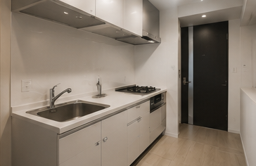
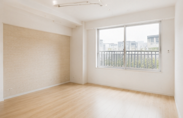
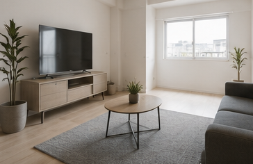

住みたい街や沿線から、理想の物件を見つけましょう。

都心の利便性と多彩な街並み。ビジネス・ショッピングの中心地。
物件数 1,245件
トレンドの発信地。カフェやショップが集まる活気あるエリア。
物件数 986件

落ち着いた住宅街と緑豊かな環境。都心へのアクセスも良好。
物件数 742件
閑静な住宅街が広がる人気エリア。ファミリー層にも人気。
物件数 1,108件
会員登録いただくと、一般公開前の物件情報をいち早くお届けします。理想の住まい探しを、一歩先へ。
